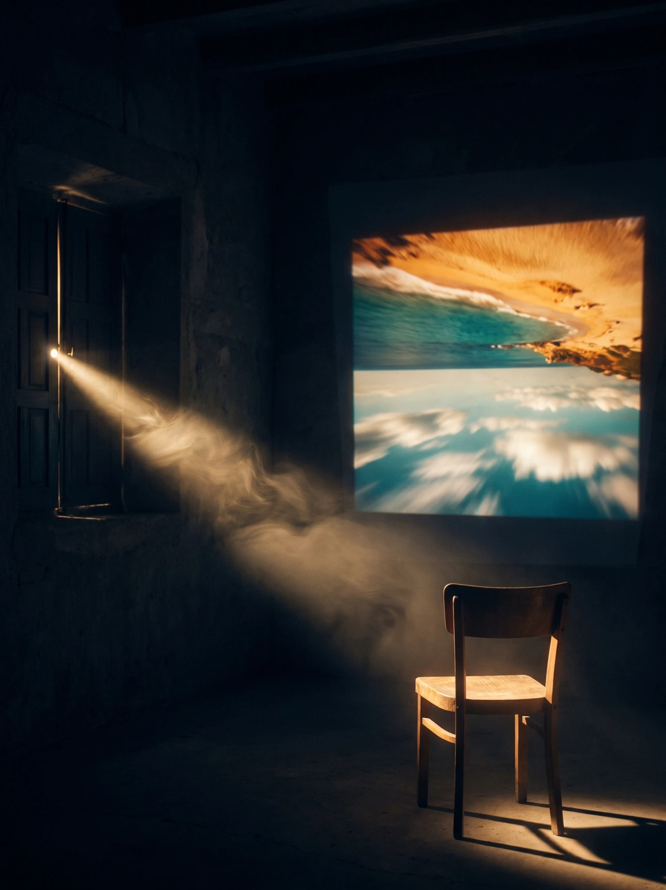
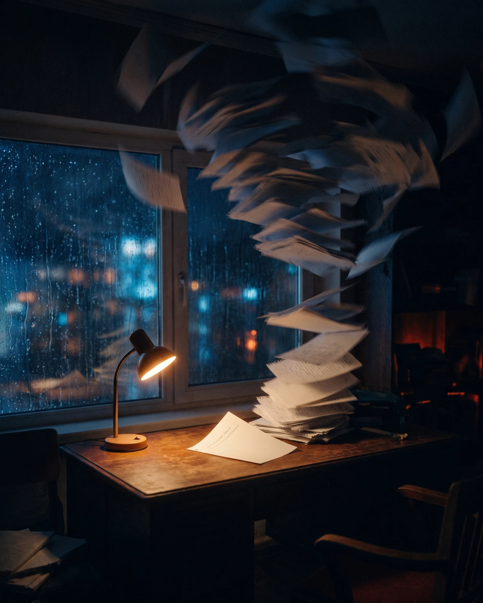
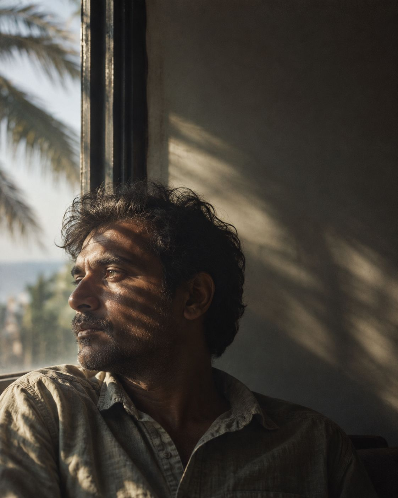
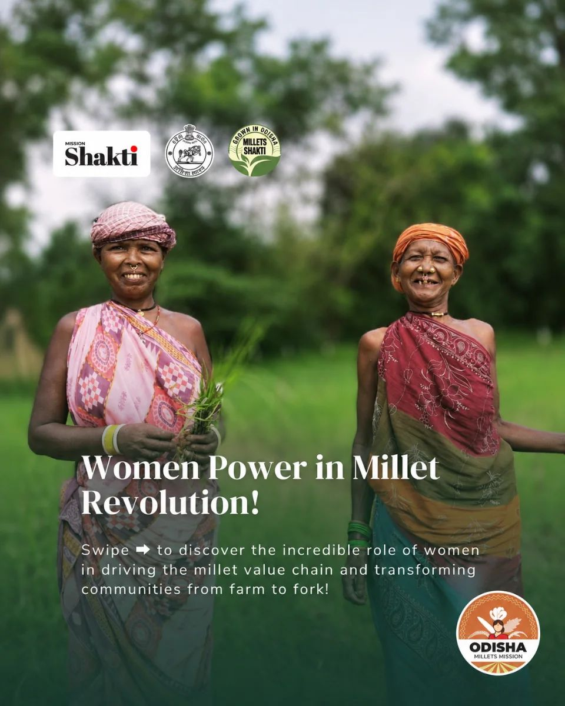
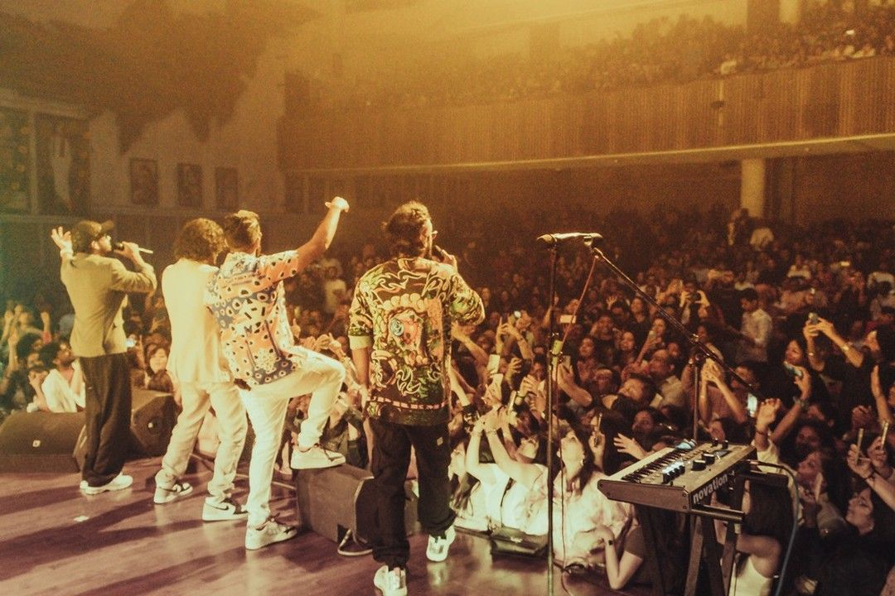
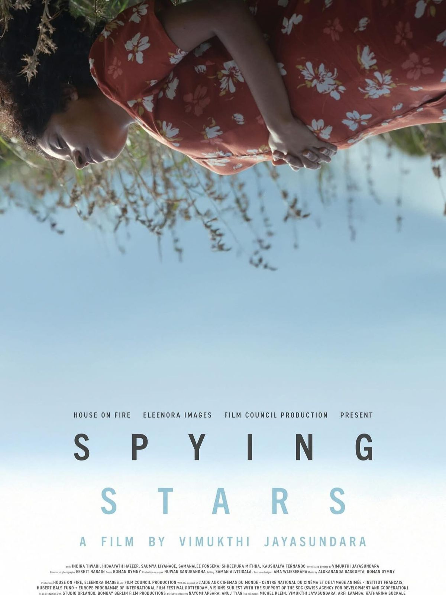
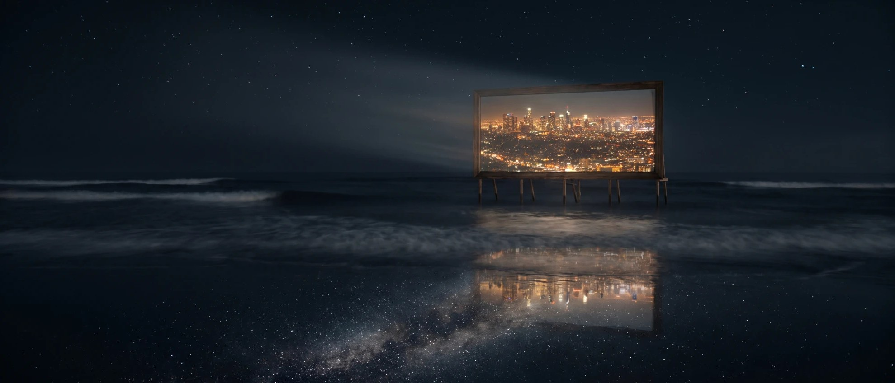
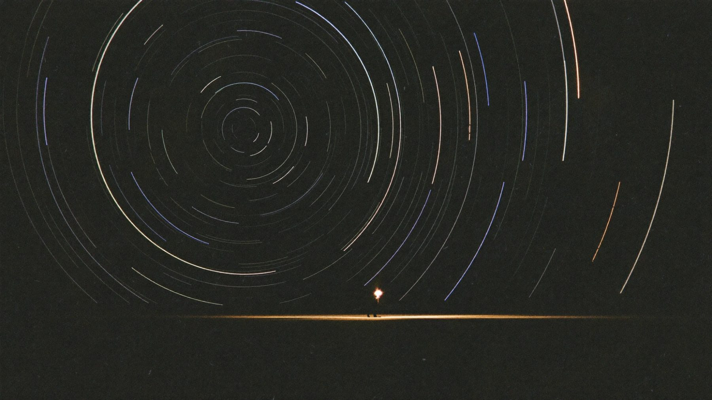

An independent creative practice · Mumbai, working globally


You have been living with it longer than anyone knows.
A film, a piece of music or a business can occupy you long before anybody else gets to see it. VALENCE works across creative direction, photography, film, writing, branding and digital strategy to give it a life other people can enter.
Tell us the part you keep trying to explain.
Creative direction/Film/Photography/Writing/Branding/Digital
You can recognise it before you can explain it.
You know when the image belongs, when the words sound like you, when a small change makes the whole thing feel wrong. The difficulty is getting somebody else close enough to see what you see.
That is where we begin. We spend time with the work and the person carrying it, paying attention to the references, convictions and particular details that give it character. As the idea becomes something people can encounter, we keep returning to what made you care about it in the first place.

The people and worlds we work with
Every kind of work teaches you to look differently.
A musician hears a pause differently from a producer. An architect notices where the light falls; a founder notices what everybody has learned to accept. We come into each world with enough curiosity to learn its habits and enough care to make work that belongs there.
- Mangal · Mars
courage, initiative, enterpriseFounders and entrepreneurs
You remember the version of the business that existed before it had a name. We help you carry what mattered then into what people encounter now, through the company’s identity, its communication and the way you speak for it.
Brand identity · Founder writing · Creative direction
- Rahu
illusion, the screen, mass mediaFilm and cinema
A film begins to reach its audience before the opening scene. We work on the images, language and campaigns that introduce its world, taking our cues from the film itself and the people making it.
Film campaigns · Publicity · Visual storytelling
- Shukra · Venus
art, music, beautyMusic and artists
A release comes with its own atmosphere, and the photograph on its cover is already part of the listening experience. We work with artists on imagery, visual direction and communication that feel at home beside the music.
Artist identity · Photography · Release campaigns
- Chandra · Moon
the public mind, popularityEntertainment and public figures
People may know your face and still have a very incomplete picture of your work. We help you decide how to be present in public as your interests evolve, with room for the parts that a familiar image has left out.
Personal branding · Public communication · Partnerships
- Budh · Mercury
trade, commerce, speechConsumer brands
You have made decisions that a customer may never hear about, although they will feel their effect. We bring that care into the identity, imagery and campaigns, making the product’s place in everyday life easier to see.
Branding · Product storytelling · Launch campaigns
- Shani · Saturn
structure, stone, disciplineArchitecture and design
A photograph can describe a room beautifully and tell us very little about how it is lived in. We work with practices on images and stories that pay attention to use, material and the thinking that gave a space its form.
Practice identity · Photography · Project stories
- Guru · Jupiter
wealth, wisdom, counselCapital and advisory
The person reading may be considering years of their family’s life. We help firms and their leaders find language that carries the seriousness of the work, with precision, discretion and a sense of the people it concerns.
Founder writing · Firm identity · Editorial communication
- Surya · Sun
authority, the stateGovernment and institutions
A programme meets people in the middle of lives already full of demands. We work on communication that makes its purpose intelligible and gives people a reason to pay attention, through identities, public campaigns and digital work.
Public campaigns · Programme identity · Digital strategy
What guides the creative work
The way something is made changes how it is felt.
A close-up changes our relationship with a face. A single word can alter the distance between a person and their audience. We make those choices with a clear sense of what the work is asking someone to notice, understand or feel.
Attention
What are we inviting someone to notice?
Feeling
What does the encounter feel like?
Meaning
What does the work help someone understand?
Memory
What remains when they look away?
Sometimes the clearest brief is the detail that keeps bothering you.
The photographs are beautiful, but you cannot find yourself in them. The writing is polished, but you would never say it that way. A campaign has plenty happening and still seems to miss the thing everybody cared about at the beginning.
You may arrive with a precise idea or with that uneasy feeling. Both give us somewhere to start. We work out what needs attention before deciding what to make.

The disciplines
The idea decides what we bring to it.
Our work moves between disciplines because a creative problem rarely stays inside one. We can take on a defined piece of work or hold a wider brief together, from its first direction to the way it reaches people.

The work should feel familiar to the person it is for.
Writing for a founder means learning what they notice, where their certainty comes from and which words feel foreign in their mouth. Directing an image asks us to understand how somebody inhabits it. We spend time with those differences so the finished work carries the person’s character, even when we are helping them express something new.
A company has its own habits and history, too. We find the relationship between the person and the business, giving each enough room to speak in a way that belongs to them.
Selected work
The work has its own reasons.
These projects take us through film, music, photography, writing, identity and campaigns. Step inside one to see what we were given, what we noticed and how the work took its form.

A tribal grain, carried from village plates to Paris.Inside the project A cola for a generation that questions the default.Inside the project
A cola for a generation that questions the default.Inside the project
 A founder’s judgement, written in his own language.Inside the project
A founder’s judgement, written in his own language.Inside the project

A band’s world, photographed from the stage and the pit.Inside the project
An independent co-production, introduced to the world’s trade press.Inside the projectThe Journal · one letter, each new moon
The Journal is where we follow the conversation further.
A question about a film can become a conversation about a city, or about the person someone was before they made it. The Journal gives that curiosity a place to go. We talk to people whose work makes us look more closely and write about the subjects we find ourselves returning to.


We would like to see what you have been seeing.
Bring the project, the references or the sentence you have not quite finished. Tell us what you are trying to make and what matters to you about it. We can begin there.